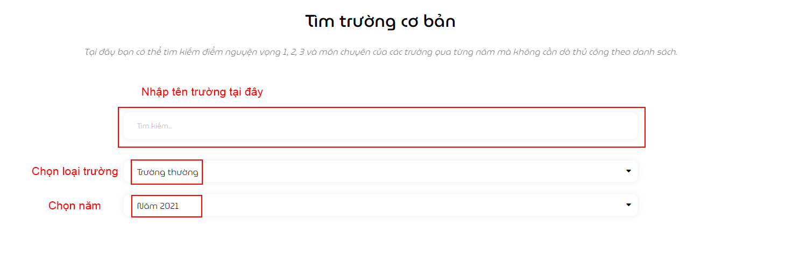
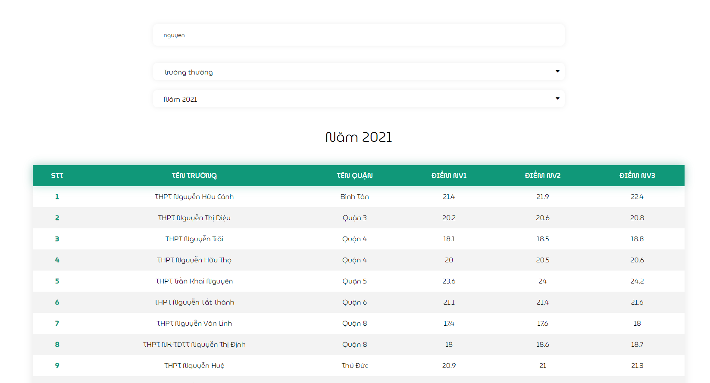

Tìm trường cơ bản ¶
Ghi chú
Hiện tại tính Score chỉ hỗ trợ tra cứu điểm chuyên trên trang Tìm trường. Những trang còn lại sẽ được bổ sung tính năng này sớm nhất có thể.
Đây là trang đầu tiên được xây dựng của dự án, phục vụ mục đích hiển thị điểm theo tên trường được tìm kiếm, bao gồm điểm nguyên vọng 1, 2, 3 và nguyện vọng chuyên

Khi nhập tên trường, bảng điểm sẽ tự động hiển thị trực tiếp. Người dùng không cần ấn bất kì nút tìm kiếm nào (như hình bên dưới)
Điểm thường và chuyên ¶
Hiển thị giữa loại thường và loại chuyên, tích hợp có sự khác nhau nhất định. Vì điểm nguyện vọng chuyên của các trường khác nhau tuỳ thuộc vào số lượng môn, nên thay vì phân loại điểm theo cột, hệ thống sẽ phân loại theo hàng (như hình bên dưới).
- Loại thường: